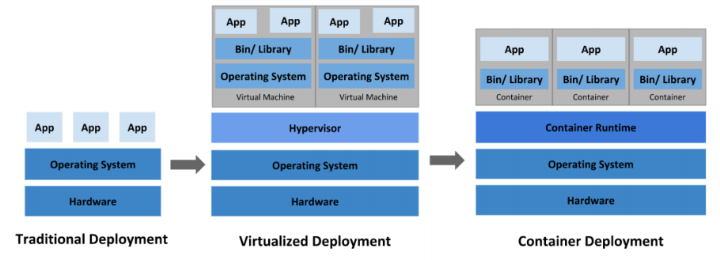
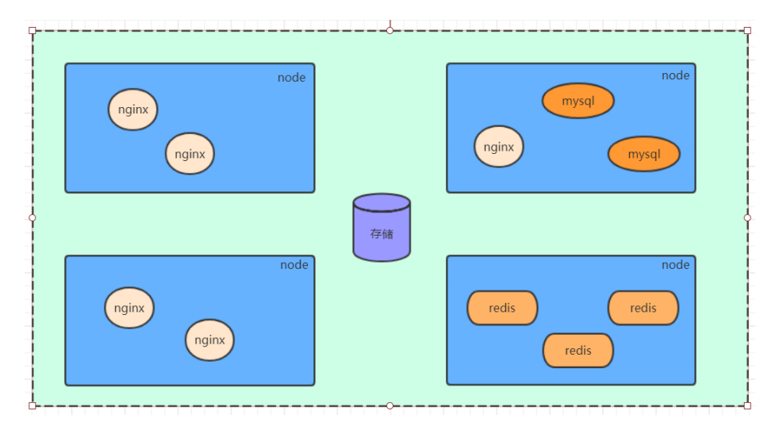
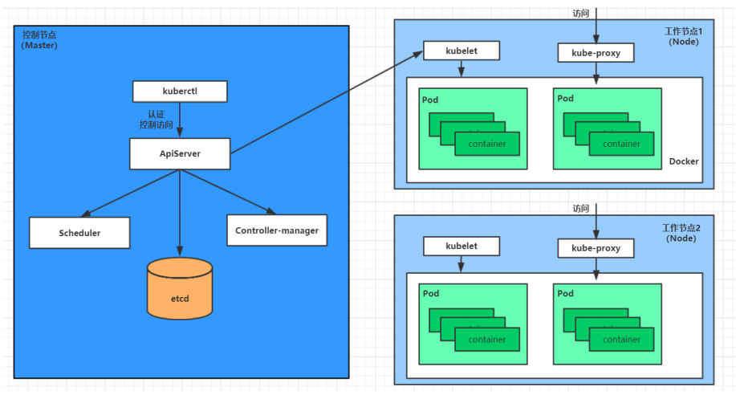

1.kubernetes介绍
kubebernetes
应用部署方式
传统部署：直接部署在物理机
虚拟化部署：可以在一个物理机运行多个虚拟机，每个虚拟机独立环境。程序环境不会相互影响，但是增加了操作系统开销。
容器化部署：虚拟化类似，但是共享操作系统。可以保证每个容器有自己的文件系统，CPU，内存，进程空间。和底层解耦，应用可以跨云服务商，跨Linux操作系统发行版部署

简介
容器化部署引入了新问题——容器编排问题：
容器故障，如何立刻启动新容器替代
并发量大，如何做到横向扩展容器数量
因此有了容器编排的软件来管理
Swarm：Docker自己的容器编排工具
Mecos：Apache的资源统一调度管控的工具
Kubernetes：Google开源的容器编排工具
Kubernetes是一个全新的基于容器技术的分布式架构领先方案。本质上管理一组服务器集群，可以在集群每个节点运行特定的程序，来对节点中的容器进行管理，目的是实现资源管理的自动化，主要提供功能：自我修复，弹性伸缩，服务发现，负载均衡，版本回退，存储编排

kubernetes组件
集群有不同的集群节点，每个节点安装不同的组件：
master：集群的控制平面，负责集群的决策管理
ApiServer：资源操作的唯一入口，接收用户输入的命令，提供认证、授权、API注册和发现等机制
Scheduler：负责集群资源调度，按照预定的调度策略将Pod调度到相应的node节点上
ControllerManager：负责维护集群的状态，比如程序部署安排、故障检测、自动扩展、滚动更新等
Etcd：负责存储集群中各种资源对象的信息
node：集群的数据平面，负责为容器提供运行环境
Kubelet：负责维护容器的生命周期，即通过控制docker，来创建、更新、销毁容器
KubeProxy：负责提供集群内部的服务发现和负载均衡
Docker：负责节点上容器的各种操作

部署一个nginx服务流程
一旦 kubernetes 环境启动之后，master 和 node 都会将自身的信息存储到 etcd 数据库
一个 nginx 服务的安装请求会首先被发送到master节点的 apiServer 组件
apiServer 组件会调用 scheduler 组件来决定到底应该把这个服务安装到哪个 node
scheduler 会从 etcd 中读取各个 node 节点的信息，然后按照一定的算法进行选择，并将结果告知 apiServer
apiServer 调用 controller-manager 去调度 Node 节点安装 nginx 服务
kubelet 接收到指令后，会通知docker，然后由 docker 来启动一个 nginx 的 pod（pod 是 kubernetes 的最小操作单元，容器必须跑在 pod 中）
一个nginx服务就运行了，如果需要访问 nginx，就需要通过 kube-proxy 来对pod产生访问的代理
概念
master：集群控制节点
node：工作负载节点
pod：kubernetes 的最小控制单元，可以有若干个容器
Controller：控制器，通过它来实现对 pod 的管理，比如启动 pod、停止 pod、伸缩 pod 的数量等等
Service：pod对外服务的统一入口
Label：标签，用于对 Pod 进行分类
NameSpace：命名空间，用来隔离pod的运行环境